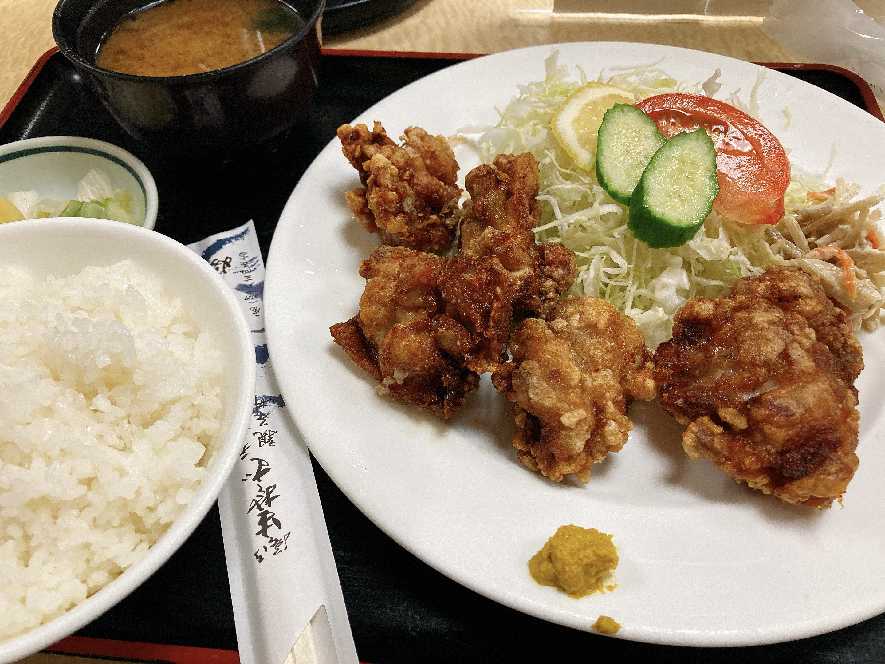

ブログってコメント機能あるよね
あれって使ってる人いるの？って感想が湧くのは、SNSが当たり前になった今だからなんだろうな。同世代では比較的ネットに入り浸るのが早かったとはいえ、個人サイト巡回生活から直接SNS文化に入ってしまったのでブログ全盛期の感覚がわからない。
そういえば初日にお借りしてるテンプレートがデフォルトで存じ上げないコメントサービスへのリンクを記事末尾に貼っ付けるようになってて、うおおおおやめてくれえええなんて言いながらとりあえずhtml一部分消し飛ばした記憶。コメントがここにつく必要ないんですよねなんてったってただの日記ですから。今のあたしにはtwitterなる文明の利器1があるんですよおにいさん。
有象無象のブログサービスを漁りながら思い至った話。
今日は池のラジオ体操祭りに参加した。祭りと言いながら夏休みに関わらず毎日やってそうだけど。たまに課題徹夜明けの食料調達がこの時間に被ることがあって、深夜のはずなのに大量に存在が集まってるからびっくりする。もう朝？そうだね。いやまだ寝てないし。
池のラジオ体操、敷地に入り次第参加判定入るのでとっても楽。大学の敷地に入ってから講堂前って結構距離あるので走らざるを得ないんだよね。当方社不なので敷地内移動を移動時間の勘定に入れられないんですよ。やっぱ存在共池まで呼べないかな……無理か……そうです無理です知ってます。
今日もコーヒーが美味い。オヒィ。
今日のTLは後期暫定時間割発表で湧き上がってましたね。19JKは相変わらず対面皆無っぽいですが。
個人的には、今年度のょょんんBの教員が変更されてるのは前期のシラバス公開時点で既知だったので今更感。だから文系教養は後悔しないようになるはやで履修しようねってずっと言ってる。n敗してる人間が言ってんだからどうか大人しく聞き入れてほしい。
謎の教員変更のおかげでC科目履修モチベが消えちゃったので、学期内の文系教養履修単位数の最低記録が更新されそう（幼卒除くと）。DSだけめちゃくちゃ潜りたいのでたのしみにしとく。あとみんな現場オタク心理学取ろうね。特に〜20年度ょょんんB勢は。2
今日の飯はやぶ。毎回唐揚げ定食食ってる。

唐揚げじゃないもの食ったことない説ある。なんかおすすめメニューあったら教えてくださいな。
ひょんなことからJavaScriptをお勉強することになったんだけど、これはよくわかんないなあと思いながら何回かぺしぺし実行したやつ。
console.log(+'1.1' + +'1.1');
おもしろいね。まだなんもわかってないけどこの言語いくらでも闇を生成できそうでやばそう。なんでこんな虚無にわざわざ言及してんの？っていうと、コードブロックを試してみたかっただけです。
今日生やしたおえかきがこちら。
— 音ゲーCaelyta🍣 (@Team_Caelyta) August 3, 2021
こう？ pic.twitter.com/u0CDBHmsCh
— ₍₍⁽⁽φ( '༥' )₎₎⁾⁾ (@slpp_bild) August 3, 2021
動くよ。mochoparrotかわいい。